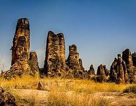
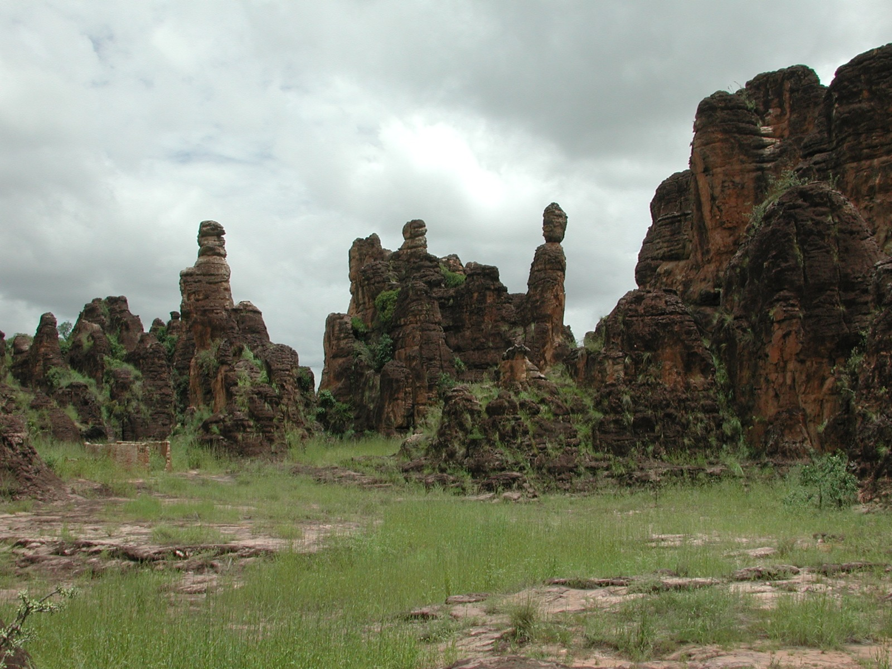
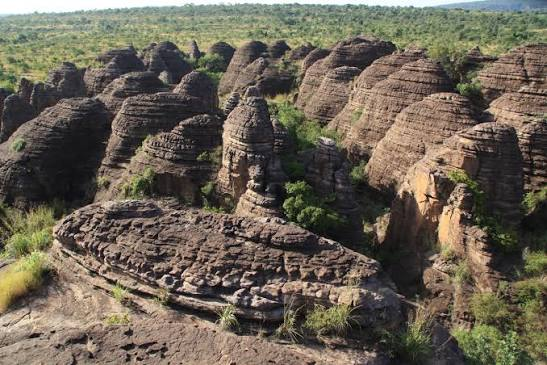
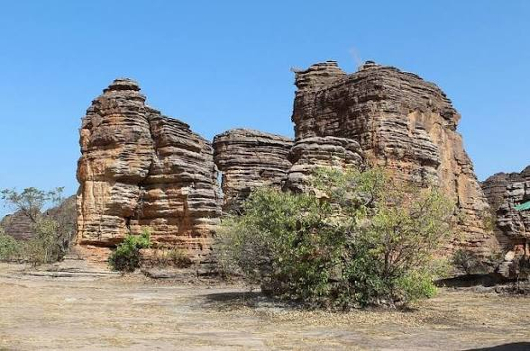
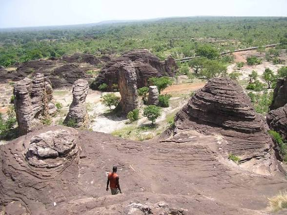

Bienvenue sur la page: Pics de Sindou

Le Pic de Sindou n’est pas une cascade mais un chef-d’œuvre de grès. Situé à 50 km de Banfora, c’est une chaîne d’aiguilles rocheuses. Formées il y a plus d’un milliard d’années, elles montent à 450m. Les habitants les appellent "les châteaux de Sindou". L’érosion du vent et de l’eau a sculpté des formes uniques. On voit des arches, des aiguilles et des tours naturelles. Le paysage ressemble à l’Ouest américain au cœur du Burkina. C’est un site classé et protégé par les communautés locales. L’accès se fait par un sentier balisé depuis le village. La montée dure environ 45 minutes à pied.

La légende dit que Sindou était un guerrier géant pétrifié. Ses doigts sont devenus les aiguilles que l’on voit aujourd’hui. D’autres parlent d’un village englouti par la colère des dieux. Les Sénoufo et Gouin voient ces roches comme sacrées. On n’y chasse pas et on n’y crie pas sans respect. Des cérémonies traditionnelles y ont lieu chaque année. Les anciens viennent consulter les esprits des pierres. Chaque formation rocheuse porte le nom d’un ancêtre. Le site est donc autant culturel que géologique. Respecter Sindou, c’est respecter l’histoire des peuples.

La randonnée au Pic de Sindou est sportive mais accessible. Le chemin monte entre les blocs de grès rouge et ocre. Des marches naturelles facilitent l’ascension pour tous. Arrivé en haut, le panorama est à couper le souffle. On voit toute la plaine de Banfora jusqu’à la Côte d’Ivoire. Par temps clair, on distingue même les champs de cannes. Le coucher de soleil enflamme les roches en rouge vif. C’est le moment préféré des photographes et des couples. Apporte de l’eau, un chapeau et de bonnes chaussures. Le vent est fort au sommet, même en saison chaude.

La géologie de Sindou fascine les scientifiques du monde entier. Le grès de la chaîne de Banfora est parmi les plus anciens. Les strates visibles racontent l’histoire de la Terre. On peut y voir des traces de dunes fossilisées. Les couleurs changent selon l’oxydation du fer dans la roche. Ocre, jaune, violet, rouge : la palette est infinie. C’est un livre de géologie à ciel ouvert. Les étudiants viennent y faire des sorties de terrain. Chaque couche de pierre a des millions d’années d’histoire. Marcher ici, c’est marcher sur le temps.

Des beauté de la nature a decouvrir!!

Pour tes images, Sindou demande de la patience. Le matin, les roches sont bleutées et mystérieuses. À midi, les contrastes sont durs mais les détails nets. En fin de journée, tout devient doré et chaud. Utilise un grand-angle pour capter l’immensité du site. Un téléobjectif isole bien une aiguille sur le ciel. Joue avec les silhouettes humaines pour donner l’échelle. La nuit, le ciel étoilé au-dessus des pics est pur. C’est un des meilleurs spots d’astrophotographie du pays. Sindou prouve que la pierre peut être vivante.

Faites y un tour vous ne serez pas deçu!!